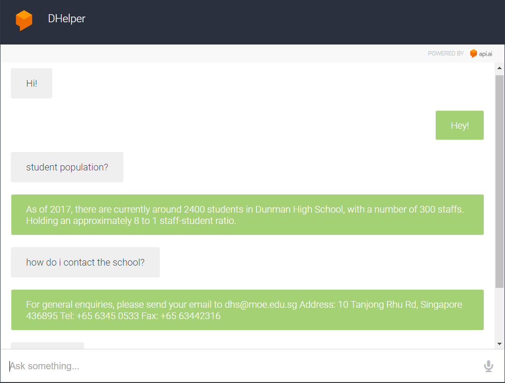

Dunman Helper is a chatbot based on api.ai,with both text and speech functions,taking data from data.gov.sg and Dunman High School web
to provide interested individuals with more details of the school, including its courses, students, contacts, and news.
Attached here are some screenshots of
what you can take off this app.

You can contact me via email at liu.zixin@dhs.sg if you have any queries